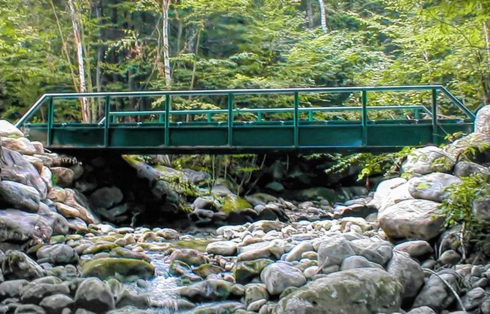

Prefabricated steel bridges, temporary and permanent.
Hinged portable bridges, 30’ through 50’, are kept in inventory for immediate rental, rental/purchase or outright purchase. Permanent bridges are fabricated to order. From ADM Welding & Fabrication, Warren, PA.

How long is your crossing?
Slide to the clear span you need. You’ll see which ADM bridges come in that length, and the closest job ADM has already built.
Seven ways to cross
Rentals, sales, rental/purchases. Financing available. Used bridges from the rental fleet are available for purchase.
- “Skidder” panel bridges 20’, 25’ and 30’ lengths A more durable, engineered alternative to timber mat bridges. 15-ton (“skidder”) and 45-ton (“truck”) capacities.
- Hinged portable bridges 30’ through 50’, kept in inventory Hinged along their length for transport as a single legal-width assembly. Typical installation time under one hour.
- Hybrid portable bridges Stock sizes 30’ to 70’ Modular units that bolt together, for wider decks, lighter picks or more elaborate guardrail.
- Long-span temporary bridges 75’ through 100’ Modular solution for longer crossings. Typically install in 2-3 days with 4 laborers plus equipment/operators.
- Permanent vehicular bridges To order, up through 100’ Designed/fabricated to order. Typically less than one day to install for single-lane bridges under 70’ long.
- Pedestrian & light duty bridges Built to order: past jobs 16’ to 115’ Trails, golf courses and walking paths, designed for a variety of uses and aesthetic considerations.
- Overlays of existing bridgesOver the bridge you already haveTemporary overlays add capacity for the short term and keep roads open; permanent overlays cost less time and expense than complete replacement.
Who they’re built for
- Forest ManagementLogging
- EnergyOil & Gas, mining, utility
- Construction
- ResidentialDriveways
- RecreationTrails, golf courses
- Local RoadsTownships, municipalities
- Public AgenciesConservation, forestry
Tell ADM the length, width and load.
37 Broadhead St., Warren, PA 16365